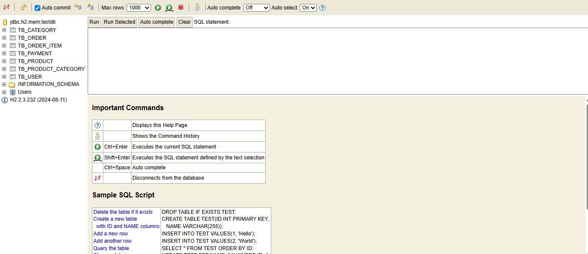
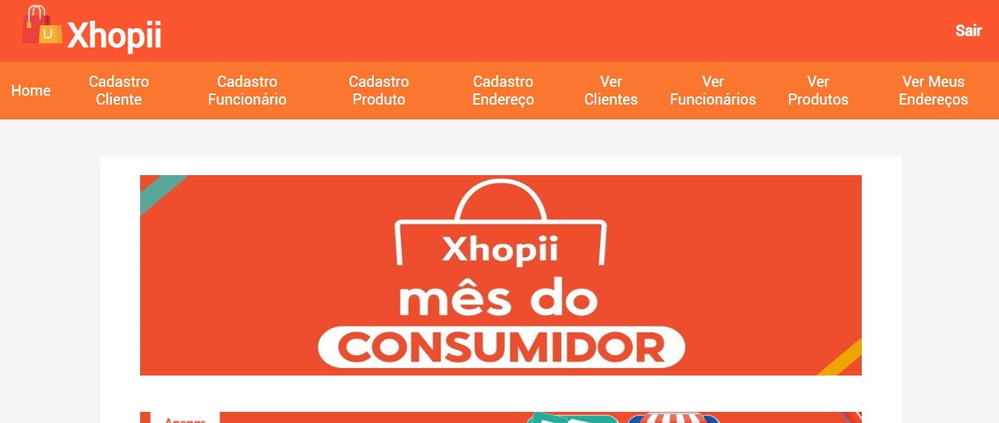

Meus Projetos

Projeto H2 Database
Projeto backend em Java, implementando tabelas e funções usando o banco H2.
Ver ProjetoPágina Infoeste
Página de divulgação da FIPP e seus professores, desenvolvida com React e TypeScript.
Ver Projeto
Projeto Xhopii
Sistema acadêmico de e-commerce inspirado na Shopee, desenvolvido com HTML, EJS, CSS, Express e MongoDB. Permite cadastro de produtos, clientes e enderecos.
Ver Projeto
MyBookList
Sistema para avaliar livros e mangás desenvolvido com Express, MongoDB, Docker e Vue.js. Integra a API Gemini para gerar curiosidades sobre os livros.
Ver Projeto